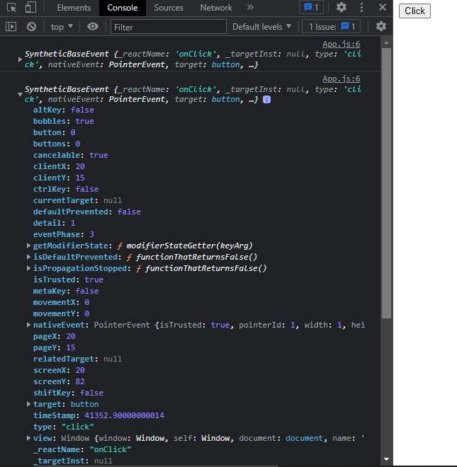
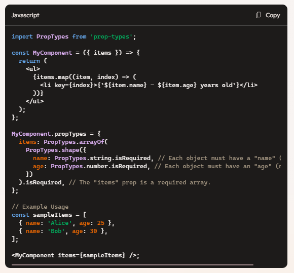

Basic
What is React?
React is a JavaScript library for building user interfaces. React is used to build single-page applications. React allows us to create reusable UI components.
What are the major features of React?
- Reusable Components:
- Virtual DOM
- JSX
- Server-Side Rendering (SSR)
- Community and Resources React has a large and active community of developers, which means extensive resources are available for learning and troubleshooting.
How does React work?
React creates a virtual DOM. When state changes in a component it firstly runs a "diffing" algorithm, which identifies what has changed in the virtual DOM. The second step is reconciliation, where it updates the DOM with the results of the difference.
What is JSX?
JSX allows us to write HTML elements in JavaScript and place them in the DOM without any createElement() and/or appendChild() methods.
JSX converts HTML tags into react elements.
What is Virtual DOM?
The virtual DOM is an in-memory representation of the real DOM elements.
Instead of interacting directly with the real DOM, which can be slow and costly in terms of performance, React creates a virtual representation of the UI components.
This virtual representation is a lightweight JavaScript object that mirrors the structure of the real DOM.
How Virtual DOM works?
- Rendering the Virtual DOM: React creates a virtual representation of the UI as a tree of JavaScript objects.
- Updating State: It generates a new Virtual DOM tree to reflect the updated state when the application state changes.
- Diffing Algorithm: React compares the new Virtual DOM tree with the previous one using its efficient diffing algorithm to identify the minimal set of changes required.
- Updating the Real DOM: React applies only the necessary changes to the real DOM, optimizing rendering performance.
What is the difference between Shadow DOM and Virtual DOM?
Great question! Shadow DOM and Virtual DOM are both powerful concepts in web development, but they serve very different purposes:
Shadow DOM
- What it is:A browser feature that allows developers to encapsulate parts of the DOM and CSS into isolated, self-contained components. It's part of Web Components.
- Purpose:It creates a mini, private DOM tree inside an element, isolating the styles and scripts from the main DOM. This prevents style or functionality conflicts with other parts of the page.
- Use Case:It's ideal for reusable UI components like custom elements (e.g.,
). - Example Benefit:Styles applied inside the Shadow DOM won’t leak out, and external styles won’t unintentionally affect the Shadow DOM.
Virtual DOM
- What it is:A lightweight, JavaScript-based representation of the actual DOM used in libraries/frameworks like React.
- Purpose:It optimizes UI rendering by batching changes. Instead of updating the real DOM immediately, updates are made to the virtual DOM, and only the differences (diff) are applied to the actual DOM.
- Use Case:It's designed for performance optimization in dynamic web applications where frequent updates to the DOM occur.
- Example Benefit:Minimizes expensive direct DOM manipulations, making the app faster and more responsive.
Key Difference
- Scope:Shadow DOM focuses on encapsulation for component-level isolation, while Virtual DOM is about efficient rendering of the entire application.
- Native vs Framework:Shadow DOM is a native browser feature, while Virtual DOM is a concept implemented by JavaScript frameworks like React.
Example
What is the difference between Element and Component?
An Element is an object that represents a DOM node it is a part of DOM structure,
while a component is a reusable block of code that contains logic, states, and also returns the Element.
When to use a Class Component over a Function Component?
- Working with Older Codebases:
- If you're maintaining or adding features to an existing project that already uses Class Components, it’s often simpler to stick with the same approach for consistency.
- Complex Lifecycle Methods:
- Class Components have explicit lifecycle methods like componentDidMount, componentDidUpdate, and componentWillUnmount, which can be useful if you find the structure easier to follow compared to managing lifecycle with Hooks in Function Components.
- Need for Error Boundaries:
- Only Class Components can be used to create error boundaries. If you need to handle runtime errors in your component tree (e.g., using componentDidCatch), you’ll need a Class Component.
- Personal or Team Familiarity:
- If you or your team are more comfortable using Class Components or haven't fully adopted Hooks yet, Class Components might still make sense for your workflow.
Why it is Recommended to use Functional Components over Class Components ?
- Simplicity and Conciseness
- Hooks Enable Powerful Features
- Better Performance
- Easier Testing
- Modern React Paradigm
- Improved Readability and Debugging
What are Pure Components?
PureComponent is similar to Component but it skips re-renders for same props and state.
SourceWhat are Head less Components?
Headless components are the components that have no user interface but have functionality. It does not care about how your components look, how they are designed, styled. It just gives you the functionality and how it will look when it is mounted or hovered is under your control. It separates the logic and behavior of a component from its visual representation.
SourceWhat is state in React?
The state is a built-in React object that is used to contain data or information about the component. A component's state can change over time; whenever it changes, the component re-renders.
What are props in React?
Props is a special keyword in React that stands for properties and is used for passing data from one component to another. Data with props are passed in a unidirectional flow from parent to child.
What is the difference between state and props?
Props are used to pass data from a parent component to a child component, while state is used to manage data within a component. Props are immutable and cannot be changed within a component, while state is mutable and can be updated.
What are synthetic events in React?
In React, synthetic events are React’s wrapper around native browser events. They provide a consistent event-handling mechanism across different browsers, ensuring that event properties and behaviors are the same regardless of the browser being used.
Image
Source
What are inline conditional expressions?
In React, an inline conditional expression is a concise way to conditionally render content or components within JSX. It enables you to make rendering decisions right within your JSX code without the need for separate if statements or ternary operators.
What is "key" prop and what is the benefit of using it in arrays of elements?
Key prop helps React identify which items have changed, are added, or are removed.
SourceWhat are controlled components?
Controlled components are form inputs whose values are controlled by React state. The state variables are updated whenever the value of the input changes, and the value of the input is set explicitly through the value prop. The onChange event handler is used to update the state.
Controlled Components have their state managed by React, providing a controlled flow of data, while Uncontrolled Components manage their state internally and rely on the DOM for handling interactions. The choice between the two patterns depends on the specific requirements and use cases of the application.
SourceWhat are uncontrolled components?
An uncontrolled component in React is one that stores its own state internally and does not control its value through the React state mechanism. Instead of being managed by React's state system, it relies directly on the DOM to provide its current value.
Controlled Components have their state managed by React, providing a controlled flow of data, while Uncontrolled Components manage their state internally and rely on the DOM for handling interactions. The choice between the two patterns depends on the specific requirements and use cases of the application.
SourceWhat is the difference between createElement and cloneElement?
The main difference between createElement and cloneElement is that createElement is used to create a new React element, while cloneElement is used to modify an existing React element. CloneElement allows you to create a new element that inherits the props of an existing element, but with additional or overridden props. This is useful when you want to reuse an existing element with some modifications.
SourceWhat is Lifting State Up in React?
Lifting state up is a pattern in React where you move the state from a lower-level component to a higher-level component, so that it can be shared between multiple child components. In other words, you are moving the state up the component tree, so that it becomes the responsibility of a higher-level component. By doing this, you are centralising the state management in a single component, which makes it easier to manage and avoids duplicating state across components.
Image

How to Lift State Up in React:
- Using Callbacks:
- Using Context:
- Using Redux:
What are Higher-Order Components?
Higher-order (HOCs) are functions that take a component and return a new component with some extended or modified behavior. Essentially, they allow you to reuse logic across multiple components without duplicating code.
Image
What is children prop?
It is a feature allows you to pass any content you want into a component, whether it’s a simple text string or a complex React component. With props.children, you can create components that can be used in many different parts of your application, and can be customized with different content each time they are used. This makes your code more modular and easier to maintain in the long run. Overall, props.children is a powerful tool that can help you create more versatile and reusable components in your React applications.How to use props.children
Image
Source
What is reconciliation?
React Reconciliation refers to React’s process of comparing the current and previous states of the Virtual DOM and updating the DOM efficiently. It makes the DOM updates faster in React. It updates the virtual DOM first and then uses the diffing algorithm to make efficient and optimized updates in the Real DOM.
How ReactJS Reconciliation Works
- Render Phase:
- React calls the render() method of a component to generate a new Virtual DOM representation.
- This new Virtual DOM is compared with the previous Virtual DOM snapshot.
- Diffing Algorithm:
- React compares the old and new Virtual DOM trees to determine the differences.
- Instead of re-rendering the entire UI, React updates only the changed nodes.
- Commit Phase:
- Once the differences are determined, React applies the updates to the real DOM in the most efficient way.
- React batches updates and minimizes reflows and repaints for better performance.
What is lazy function in React?
lazy function in React is a way to load components only when they are needed. This helps improve the initial loading time of your application by splitting the code into smaller chunks. When you use lazy, the component is loaded dynamically, which means it's only fetched when it's about to be rendered. This process is also known as "code splitting." To handle the loading state, you wrap the lazy-loaded component with a Suspense component and provide a fallback that will be displayed while the component is being loaded.
Image
Does the lazy function support named exports?
No, the lazy function in React does not support named exports directly. The lazy function expects a default export from the module. If you try to use named exports, you'll encounter an error.
However, you can work around this limitation by re-exporting the named export as a default export in an intermediary module. Here's an example to illustrate this:
Image
Why React uses className over class attribute?
React uses className instead of the class attribute because class is a reserved keyword in JavaScript. In JavaScript, class is used to define classes, which are a part of the object-oriented programming features of the language. To avoid conflicts and confusion, React uses className as the attribute for defining CSS classes in JSX (JavaScript XML), which is a syntax extension used by React.
What are fragments?
In React, Fragments are a way to group a list of children without adding extra nodes to the DOM. Essentially, a Fragment allows you to return multiple elements from a component's render method without having to wrap them in an additional DOM element like a div.
Why can't we return a list of elements without a wrapper or Fragment?
In React, you can't return a list of elements without wrapping them in a single parent element, like a div or a Fragment, due to how JSX works. JSX needs to have one root element to return because it ultimately translates to JavaScript function calls, and a function can only return a single value. Returning multiple sibling elements directly would break this single return value rule.
What are stateless components?
Stateless components are JavaScript functions that return JSX (JavaScript XML) to describe the structure and appearance of the component. Unlike stateful components, they do not have an internal state and do not manage any data. Instead, they receive data and behavior through props (properties) passed down from parent components.
Key features of stateless components:
- Pure functions: They behave like simple functions that take input (props) and return output (UI elements).
- No internal state: They don't have their own "memory" of past interactions or events.
- Easier to test: Since they don't depend on state, they're predictable and simple to debug.
- Improved performance: They avoid the overhead of managing state, making them faster than stateful components.
What are stateful components?
A stateful component is a component in a programming framework, like React, that can track and manage its own data (state) and update the user interface based on changes in that state. It is dynamic and responds to user interactions or other events.
How are stateful components different from stateless components?
-
Stateful Components:
- Manage internal state: These components store and manage their own data (state).
- Dynamic: They can update and re-render themselves based on user interactions or other events.
- More complex: Require extra logic to handle and update the state.
- Example: A login form that tracks input fields and shows errors if validation fails.
-
Stateless Components:
- No internal state: They rely entirely on data (props) passed from parent components.
- Static: Render the same output as long as the props remain unchanged.
- Simpler: Easier to write, test, and maintain due to their predictable behavior.
- Example: A button that displays a fixed label like "Submit."
What are the advantages of React?
- Component-based architecture
- Virtual DOM
- Declarative syntax
- Rich ecosystem
- Cross-platform development
- One-way data flow
- Strong community support
- JSX
What are the limitations of React?
- Learning Curve: React introduces concepts like JSX, Virtual DOM, and state management, which might be challenging for beginners to grasp.
- Boilerplate Code: Setting up a React project often requires additional configuration with tools like Webpack or Babel, which can be time-consuming.
- Focus on UI: React is a library, not a full framework, meaning developers need to integrate additional libraries for routing (e.g., React Router) or state management (e.g., Redux) in larger applications.
- Performance Overhead: Overuse of state or frequent re-renders can lead to performance issues, requiring optimization techniques like memoization.
- Fragmentation: With its rich ecosystem, there can be too many choices for libraries or tools, which can overwhelm developers.
- SEO Challenges: React's single-page applications (SPAs) can face issues with search engine optimization, although this can be addressed with server-side rendering (SSR) using tools like Next.js.
- Rapid Changes: React and its ecosystem evolve quickly, meaning developers need to continuously learn and update skills to keep up.
- Lack of Opinions: React doesn't enforce project structure or architecture, which could lead to inconsistencies in larger teams.
What are the recommended ways for static type checking?
Static type checking helps catch type-related errors during development rather than at runtime, ensuring more robust and maintainable code. Here are some widely recommended ways to perform static type checking:
-
TypeScript:
A superset of JavaScript that introduces strong typing. Helps define types for variables, functions, and objects, making development more robust.
-
Flow:
A static type-checker for JavaScript, developed by Meta, allowing gradual typing for incremental adoption and real-time type error detection.
-
PropTypes (for React):
A lightweight way to validate the types of props passed to React components. For example:
What is the use of react-dom package?
-
Rendering Components:
The
react-dompackage includes therendermethod to render React components into the DOM. Example:Code
import React from 'react'; import ReactDOM from 'react-dom'; import App from './App'; ReactDOM.render(, document.getElementById('root') ); -
Server-Side Rendering:
Used for rendering React components on the server with methods like
renderToStringorrenderToStaticMarkup. -
Hydration:
The
hydratemethod is used to attach React's behavior to server-rendered HTML for applications using server-side rendering or static-site generation. -
Portals:
Allows components to render outside their parent DOM hierarchy. Example:
Code
import { createPortal } from 'react-dom'; const Modal = ({ children }) => { return createPortal( children, document.getElementById('modal-root') ); };
What is ReactDOMServer?
ReactDOMServer is a module provided by React for rendering components on the server side, instead of in the browser. It allows you to generate HTML strings from React components that can be sent to the client as part of a server response. This is particularly useful in server-side rendering (SSR), where rendering occurs on the server to improve page load times and search engine optimization (SEO).
Code
How events are different in React?
In React, event handling works differently from handling events in regular HTML or vanilla JavaScript. Here's how:
Event Binding:
- In HTML/JavaScript: Event handlers are typically added using attributes like onclick, onmouseover, etc., or with methods like addEventListener.
- In React: Event handlers are passed as props to elements, using camelCase syntax (e.g., onClick instead of onclick).
Synthetic Events:
- React creates a wrapper around native browser events called SyntheticEvent. This is a cross-browser abstraction, ensuring consistent behavior across different browsers.
- Example: A SyntheticEvent works just like a browser event, but it's managed by React for better performance and compatibility.
Binding this:
- In JavaScript: You may need to bind the this context manually when passing event handlers in a class component.
- In React: React automatically ensures the correct context in functional components, especially with hooks. However, in older class components, you must explicitly bind this
Code

Preventing Default:
- In JavaScript, you use event.preventDefault() directly.
- In React, you still call e.preventDefault(), but using the SyntheticEvent object:
What is the impact of indexes as keys?
Using indexes as keys in React has some potential drawbacks that can negatively impact your application, particularly in scenarios where the list of items being rendered changes dynamically. Here's a breakdown:
-
Performance Issues
When React uses indexes as keys, it may not properly identify which items in a list have been added, removed, or reordered. This can cause unnecessary re-renders of components, leading to performance inefficiencies.
For example:
- If the order of list items changes and keys are based on indexes, React might assume the DOM structure hasn't changed and simply updates the content, which can result in mismatches.
-
State Preservation Problems
Keys are crucial for associating state with the correct elements. Using indexes as keys can cause React to reuse a component incorrectly, leading to unexpected behavior or state-related bugs.
Example:
const items = ['Apple', 'Banana', 'Cherry']; items.splice(1, 0, 'Date'); // Insert "Date" at index 1
If you use an index as the key, React might mistakenly associate the state of "Banana" with "Date" after the update.
Do Hooks replace render props and higher order components?
Hooks don't entirely replace render props or higher-order components (HOCs), but they do provide a simpler and more streamlined alternative for solving many of the same problems.
Both render props and higher-order components render only a single child but in most of the cases Hooks are a simpler way to serve this by reducing nesting in your tree.
What is a switching component?
A switching component in React is a component that conditionally renders one of several child components based on some logic, such as application state or a specific route. It acts like a "switch" to determine which component should be displayed at a given time.
Code
What are React Mixins?
In React, Mixins were a way to share reusable logic across multiple components in class-based components. They allowed you to "mix in" functionalities into a component, enabling code reuse without duplicating logic.
Code
Are custom DOM attributes supported in React v16?
Yes, React v16 fully supports custom DOM attributes. Any attributes that are not standard HTML attributes will be passed directly to the DOM by React. This change makes it easier to use React with custom data attributes or non-standard attributes required by third-party libraries.
Code
What is React PropTypes array with shape?
In React, PropTypes is a type-checking library that allows you to validate the props passed to a component. When you expect a prop to be an array of objects, and you want to validate the shape of each object in the array, you use PropTypes.arrayOf combined with PropTypes.shape
Code
Why you can't update props in React?
You can't update props in React because props are immutable, meaning they are read-only and cannot be modified directly by the receiving component. Props are designed to pass data from a parent component to a child component and should not be changed by the child. This ensures a one-way data flow, which is a core principle of React's architecture, making components predictable and easier to debug.
If You Need to Update Data:
- Update in Parent: If you need to modify the data, do it in the parent component and pass the updated props down to the child.
- Use State: If the component needs to manage its own updatable data, you should use state instead of props.
What are the common folder structures for React?
A well-organized folder structure is important in React projects to keep the codebase maintainable and scalable. There isn't a single "right" way to structure your folders—it often depends on the size, complexity, and requirements of your application. However, here are some common folder structures that developers use:
Code
What are the popular packages for animation?
React has a vibrant ecosystem of animation libraries that can bring your web applications to life. Here are some popular ones
- React Spring: A physics-based animation library that provides smooth and natural animations.
- Framer Motion: Known for its declarative API, it's great for creating fluid and interactive animations.
- React Transition Group: A simple library for managing component transitions.
- GreenSock Animation Platform (GSAP): A powerful library for complex animations, widely used in the industry.
- React Awesome Reveal: Focuses on revealing animations when components become visible.
What is the benefit of styles modules?
CSS Modules offer several benefits when it comes to styling your web applications. Here's why they can be a game-changer:
- Scoped Styles
- CSS Modules ensure that styles are scoped locally to the component, avoiding clashes with global styles.
- For example, if two components have a .button class, they won't interfere with each other.
- Better Maintainability
- By localizing styles to components, your stylesheets become easier to manage and maintain, especially in large projects.
- Automatic Class Name Generation
- CSS Modules generate unique class names behind the scenes, eliminating the need for manually naming classes to avoid conflicts.
- Component-based Styling
- They align with React's component-based architecture, promoting encapsulated and reusable styling.
- Dynamic Styling
- Class names can be imported and used programmatically, making it easy to apply styles dynamically.
Code
What is React-specific linters?
React-specific linters are tools or plugins that work alongside JavaScript linters like ESLint to help you enforce best practices and maintain high-quality code specifically for React applications. They ensure that your React code is clean, consistent, and adheres to React's conventions. Here's what they focus on:
Key Features of React-specific Linters
- React Code Standards:
- Enforce rules for proper React component structure, naming conventions, and usage.
- JSX Syntax Checks:
- Validate JSX syntax, ensuring it is used correctly and consistently.
- Rules of Hooks:
- Ensure compliance with React's Rules of Hooks (e.g., only calling hooks at the top level or within React components).
- Accessibility (a11y):
- Ensure your application meets accessibility standards by identifying issues like missing alt attributes, improper ARIA roles, or missing labels for form elements.
What are the popular React-specific linters?
- ESLint: The most widely used linter for JavaScript, including React. It can be extended with plugins for React-specific rules.
- Prettier: While not a linter, Prettier is an opinionated code formatter that ensures consistent code style. It can be integrated with ESLint using eslint-plugin-prettier.
- Husky and lint-staged: These tools work alongside linters to enforce code quality by running linting checks before committing code to a repository.
Question
Answer
Question
Answer
Advance
What is React Fiber?
React Fiber is an advanced architecture of React, which is the popular JavaScript library for building user interfaces. Introduced in React 16, Fiber reimagines how React processes updates and renders components, making the library more efficient and flexible for modern use cases.
Key Features of React Fiber
- Concurrency:
- React Fiber allows updates to be processed asynchronously, prioritizing important updates and pausing others when necessary. This is especially useful for keeping apps responsive even during heavy computations.
- Incremental Rendering:
- Instead of updating the entire application in one go, React Fiber breaks updates into small units of work, spreading them across multiple frames. This enables smoother rendering and improves performance.
- Prioritization:
- Fiber assigns priorities to different updates (e.g., user input vs. less urgent rendering), ensuring critical interactions are handled first.
- Error Boundaries:
- Fiber introduced error boundaries, enabling developers to catch and handle errors at the component level without crashing the entire application.
Why React Fiber Matters
Fiber opens up powerful features like Concurrent Mode, Suspense, and Time Slicing, which make React applications faster and more fluid. It lays the groundwork for future innovations in React.
If you'd like, I can dive deeper into any specific feature or explain how to use Fiber-related concepts in your projects!
What is the main goal of React Fiber?
The main goal of React Fiber is to enhance the rendering process of React by making it more efficient, flexible, and capable of handling complex modern applications. It achieves this through a revamped architecture designed to improve responsiveness and user experience. Here are the core objectives of React Fiber:
- Concurrency:
- React Fiber allows updates to be processed asynchronously, prioritizing important updates and pausing others when necessary. This is especially useful for keeping apps responsive even during heavy computations.
- Incremental Rendering:
- Instead of updating the entire application in one go, React Fiber breaks updates into small units of work, spreading them across multiple frames. This enables smoother rendering and improves performance.
- Prioritization:
- Fiber assigns priorities to different updates (e.g., user input vs. less urgent rendering), ensuring critical interactions are handled first.
- Error Boundaries:
- Fiber introduced error boundaries, enabling developers to catch and handle errors at the component level without crashing the entire application.
What are React Hooks, and how do they differ from class-based components?
React Hooks are functions introduced in React 16.8 that allow you to use state, lifecycle methods, and other React features in functional components, rather than being restricted to class components. They revolutionized how developers write React code by simplifying logic and enabling more reusable and concise components.
Here are the key differences between React Hooks and class-based components:
-
State Management:
- In class components, state is managed using the this.state object, and updates are done with this.setState().
- With hooks like useState, functional components can manage state directly without the need for a class.
-
Lifecycle Methods vs. useEffect
- Class components use lifecycle methods like componentDidMount, componentDidUpdate, and componentWillUnmount.
- The useEffect hook consolidates these into a single function, handling side effects and cleanup in a more streamlined way.
-
Simplified Logic:
- Hooks enable you to split logic into smaller, reusable functions called custom hooks, which aren't possible with class-based components.
- In classes, logic can become entangled due to the way lifecycle methods are organized.
-
Boilerplate:
- Class components often require more boilerplate code with constructors and this bindings.
- Functional components with hooks are leaner and easier to read, as they eliminate the need for constructors and this.
-
Code Organization and Reusability:
- Hooks allow logic to be reused across components via custom hooks.
- Class components typically rely on patterns like Higher-Order Components (HOCs) or render props for code reuse, which can make the codebase harder to maintain.
How can you optimize the performance of a React application?
Optimizing the performance of a React application ensures a smoother user experience, especially as your app grows. Here are several effective techniques:
-
Code Splitting:
- Use tools like React's React.lazy and Suspense to split your code into smaller bundles that load only when needed, reducing initial load time.
-
Memoization:
- Use React.memo to prevent unnecessary re-renders of functional components if their props haven’t changed.
- Utilize hooks like useMemo and useCallback to memoize expensive computations or functions.
-
Virtualized Lists:
- For large datasets, libraries like react-window or react-virtualized render only the visible items, drastically improving rendering performance.
-
Efficient State Management:
- Avoid unnecessary re-renders by structuring your state properly. Lift the state up only when necessary and utilize libraries like Redux Toolkit or Zustand when managing complex states.
-
Lazy Loading Images and Components:
- Use libraries like react-lazyload for lazy loading images and components, ensuring they load only when visible in the viewport.
-
Use libraries like react-lazyload for lazy loading images and components, ensuring they load only when visible in the viewport.
- Define functions outside of JSX instead of inline, as inline functions are recreated on every render.
-
Reduce the Number of DOM Elements:
- Minimize unnecessary DOM elements to simplify the virtual DOM diffing process.
-
Debounce and Throttle:
- Debounce or throttle events like scrolling, resizing, or input using libraries like lodash or custom implementations to avoid excessive updates.
-
Use Immutable Data Structures:
- Keep your data immutable to ensure efficient change detection.
-
Monitor and Analyze Performance:
- Use React Developer Tools and browser profiling tools to identify performance bottlenecks and optimize accordingly.
What are the differences between Context API and Redux for state management?
The Context API and Redux are both tools for state management in React applications, but they differ significantly in their use cases, features, and implementation. Here's a detailed comparison:
1. Purpose and Use Case:
-
Context API:
- Used for simple and lightweight state sharing across a component tree.
- Ideal for managing themes, authentication, and other application-wide states with minimal complexity.
-
Redux:
- A comprehensive state management library for handling complex application states and interactions.
- Suited for apps with deeply nested components or where state logic requires strict control, middleware, and debugging.
2. State Management and Architecture:
-
Context API:
- Works by providing a value from a Provider component that can be consumed by any child component within its tree.
- Decentralized—does not enforce strict architecture or patterns.
-
Redux:
- Follows a centralized state store pattern, where the entire application state is stored in a single store.
- Encourages strict architectural patterns like actions, reducers, and middleware for state modifications.
3. Boilerplate Code:
-
Context API:
- Minimal boilerplate; define the Context and wrap components with a Provider.
-
Redux:
- Requires more boilerplate to set up, including actions, reducers, a store, and possibly middleware.
4. Performance:
-
Context API:
- Can cause performance issues with frequent state updates because the entire component tree under the Provider re-renders when the context value changes.
- Needs optimization techniques like memoization (React.memo) to mitigate this.
-
Redux:
- Efficient re-renders due to the connect function (or useSelector in modern Redux) that allows selective updates.
- Redux uses immutability to track state changes, making it more predictable.
5. Middleware and Asynchronous Actions:
-
Context API:
- Does not provide built-in support for middleware or handling asynchronous actions.
- You need to handle these manually using hooks like useReducer or third-party libraries.
-
Redux:
- Supports middleware (e.g., redux-thunk, redux-saga) for handling complex asynchronous logic.
- Makes handling side effects and advanced state logic more manageable.
6. Tooling and Ecosystem:
-
Context API:
- Native to React, no external dependencies or dedicated tools.
- Lightweight and simple to use.
-
Redux:
- Offers a rich ecosystem of tools like Redux DevTools for state inspection and debugging.
- Extends functionality with plugins and middleware.
7. Community and Scalability:
-
Context API:
- Suitable for small to medium projects or when state management requirements are straightforward.
-
Redux:
- Proven to scale well for large and complex applications, thanks to its modular and predictable architecture.
What are the differences between React Router and other routing libraries?
React Router is a popular library for managing navigation and routing in React applications. However, there are several other routing libraries available, each with its own strengths and weaknesses. Here's a comparison between React Router and other common routing libraries:
- React Router
- Key Features: Declarative routing, dynamic route matching, nested routes, code splitting, and integration with React's state and lifecycle.
- Pros: Highly flexible and designed specifically for React applications. It supports advanced features like lazy loading and nested routes seamlessly.
- Cons: Can be a bit more complex to configure compared to simpler routing libraries.
- Next.js Router
- Key Features: Built-in routing for server-side rendering (SSR) and static site generation (SSG).
- Pros: Part of the Next.js framework, making it ideal for building SEO-friendly and high-performance React applications. Routes are automatically generated based on the file system structure.
- Cons: Limited to Next.js projects; does not support some advanced routing patterns out-of-the-box like React Router does.
What is React's Strict Mode, and what is it used for?
React's Strict Mode is a development tool that highlights potential problems in your application. It doesn't render anything visible to the user but performs checks on your components and warns about:
- Unsafe lifecycle methods.
- Deprecated APIs.
- Potential side effects in code. It wraps part of your app with React.StrictMode and is used to ensure code quality and compatibility with future React versions.
What is the difference between useEffect and componentDidMount?
Both are used to handle side effects like fetching data or interacting with the DOM, but there are key differences:
- componentDidMount is a lifecycle method in class components and runs only once after the component mounts.
- useEffect is a hook used in functional components and can emulate multiple lifecycle methods (like componentDidMount, componentDidUpdate, and componentWillUnmount) based on its dependency array. When the dependency array is empty ([]), useEffect behaves like componentDidMount and runs only once after the component mounts.
What is the difference between client-side routing and server-side routing in React applications?
- Client-Side Routing: The routing logic is handled in the browser using JavaScript. When you navigate to a new route, the browser does not reload the entire page. Instead, the JavaScript framework (like React) updates the URL and dynamically renders the corresponding components. The entire application is loaded initially, and navigation after that modifies only the necessary parts of the UI.
- Server-Side Routing: Routing is handled on the server. When you navigate to a new route, the browser sends an HTTP request to the server. The server processes the request and sends back the full HTML page for the desired route. Each navigation results in a full page reload in the browser.
Question
Answer
Question
Answer
How to?
How to apply validation on props in React?
Answer
const App = () => {
return (
Hello, JSX!
This is a JSX component.
);
};
How to use innerHTML in React?
Answer
How to use styles in React?
Answer
How do you conditionally render components?
Answer
Why we need to be careful when spreading props on DOM elements?
Answer
How do you memoize a component?
Answer
How you implement Server Side Rendering or SSR?
Answer
How to enable production mode in React?
Answer
Why should component names start with capital letter?
Answer
How to loop inside JSX?
Answer
How do you access props in attribute quotes?
Answer
How to conditionally apply class attributes?
Answer
What is the difference between React and ReactDOM?
Answer
Why ReactDOM is separated from React?
Answer
How to use React label element?
Answer
How to combine multiple inline style objects?
Answer
How to re-render the view when the browser is resized?
Answer
How to pretty print JSON with React?
Answer
How to focus an input element on page load?
Answer
How can we find the version of React at runtime in the browser?
Answer
How to add Google Analytics for react-router?
Answer
How do you apply vendor prefixes to inline styles in React?
Answer
How to import and export components using react and ES6?
Answer
Is it possible to use async/await in plain React?
Answer
Question
Answer
Question
Answer
Question
Answer
Question
Answer